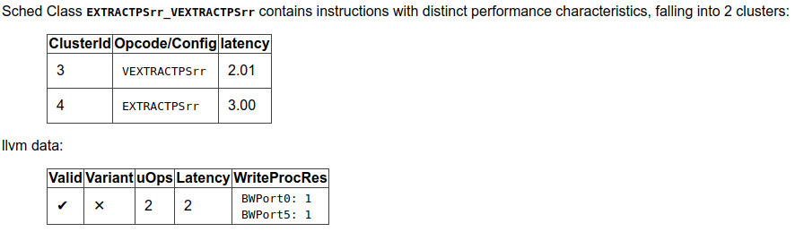

llvm-exegesis - LLVM Machine Instruction Benchmark¶
SYNOPSIS¶
llvm-exegesis [options]
DESCRIPTION¶
llvm-exegesis is a benchmarking tool that uses information available in LLVM to measure host machine instruction characteristics like latency or port decomposition.
Given an LLVM opcode name and a benchmarking mode, llvm-exegesis generates a code snippet that makes execution as serial (resp. as parallel) as possible so that we can measure the latency (resp. uop decomposition) of the instruction. The code snippet is jitted and executed on the host subtarget. The time taken (resp. resource usage) is measured using hardware performance counters. The result is printed out as YAML to the standard output.
The main goal of this tool is to automatically (in)validate the LLVM's TableDef scheduling models. To that end, we also provide analysis of the results.
EXAMPLES: benchmarking¶
Assume you have an X86-64 machine. To measure the latency of a single instruction, run:
$ llvm-exegesis -mode=latency -opcode-name=ADD64rr
Measuring the uop decomposition of an instruction works similarly:
$ llvm-exegesis -mode=uops -opcode-name=ADD64rr
The output is a YAML document (the default is to write to stdout, but you can redirect the output to a file using -benchmarks-file):
---
key:
opcode_name: ADD64rr
mode: latency
config: ''
cpu_name: haswell
llvm_triple: x86_64-unknown-linux-gnu
num_repetitions: 10000
measurements:
- { key: latency, value: 1.0058, debug_string: '' }
error: ''
info: 'explicit self cycles, selecting one aliasing configuration.
Snippet:
ADD64rr R8, R8, R10
'
...
To measure the latency of all instructions for the host architecture, run:
#!/bin/bash
readonly INSTRUCTIONS=$(($(grep INSTRUCTION_LIST_END build/lib/Target/X86/X86GenInstrInfo.inc | cut -f2 -d=) - 1))
for INSTRUCTION in $(seq 1 ${INSTRUCTIONS});
do
./build/bin/llvm-exegesis -mode=latency -opcode-index=${INSTRUCTION} | sed -n '/---/,$p'
done
FIXME: Provide an llvm-exegesis option to test all instructions.
EXAMPLES: analysis¶
Assuming you have a set of benchmarked instructions (either latency or uops) as YAML in file /tmp/benchmarks.yaml, you can analyze the results using the following command:
$ llvm-exegesis -mode=analysis \
-benchmarks-file=/tmp/benchmarks.yaml \
-analysis-clusters-output-file=/tmp/clusters.csv \
-analysis-inconsistencies-output-file=/tmp/inconsistencies.txt
This will group the instructions into clusters with the same performance characteristics. The clusters will be written out to /tmp/clusters.csv in the following format:
cluster_id,opcode_name,config,sched_class
...
2,ADD32ri8_DB,,WriteALU,1.00
2,ADD32ri_DB,,WriteALU,1.01
2,ADD32rr,,WriteALU,1.01
2,ADD32rr_DB,,WriteALU,1.00
2,ADD32rr_REV,,WriteALU,1.00
2,ADD64i32,,WriteALU,1.01
2,ADD64ri32,,WriteALU,1.01
2,MOVSX64rr32,,BSWAP32r_BSWAP64r_MOVSX64rr32,1.00
2,VPADDQYrr,,VPADDBYrr_VPADDDYrr_VPADDQYrr_VPADDWYrr_VPSUBBYrr_VPSUBDYrr_VPSUBQYrr_VPSUBWYrr,1.02
2,VPSUBQYrr,,VPADDBYrr_VPADDDYrr_VPADDQYrr_VPADDWYrr_VPSUBBYrr_VPSUBDYrr_VPSUBQYrr_VPSUBWYrr,1.01
2,ADD64ri8,,WriteALU,1.00
2,SETBr,,WriteSETCC,1.01
...
llvm-exegesis will also analyze the clusters to point out inconsistencies in the scheduling information. The output is an html file. For example, /tmp/inconsistencies.html will contain messages like the following :
Note that the scheduling class names will be resolved only when llvm-exegesis is compiled in debug mode, else only the class id will be shown. This does not invalidate any of the analysis results though.
OPTIONS¶
- -help¶
Print a summary of command line options.
- -opcode-index=<LLVM opcode index>¶
Specify the opcode to measure, by index. Either opcode-index or opcode-name must be set.
- -opcode-name=<LLVM opcode name>¶
Specify the opcode to measure, by name. Either opcode-index or opcode-name must be set.
- -mode=[latency|uops|analysis]¶
Specify the run mode.
- -num-repetitions=<Number of repetition>¶
Specify the number of repetitions of the asm snippet. Higher values lead to more accurate measurements but lengthen the benchmark.
- -benchmarks-file=</path/to/file>¶
File to read (analysis mode) or write (latency/uops modes) benchmark results. "-" uses stdin/stdout.
- -analysis-clusters-output-file=</path/to/file>¶
If provided, write the analysis clusters as CSV to this file. "-" prints to stdout.
- -analysis-inconsistencies-output-file=</path/to/file>¶
If non-empty, write inconsistencies found during analysis to this file. - prints to stdout.
- -analysis-numpoints=<dbscan numPoints parameter>¶
Specify the numPoints parameters to be used for DBSCAN clustering (analysis mode).
- -analysis-espilon=<dbscan epsilon parameter>¶
Specify the numPoints parameters to be used for DBSCAN clustering (analysis mode).
- -ignore-invalid-sched-class=false¶
If set, ignore instructions that do not have a sched class (class idx = 0).
EXIT STATUS¶
llvm-exegesis returns 0 on success. Otherwise, an error message is printed to standard error, and the tool returns a non 0 value.